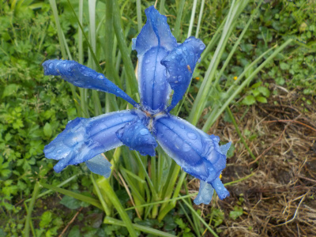
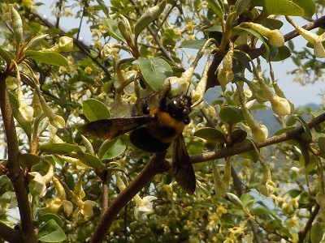
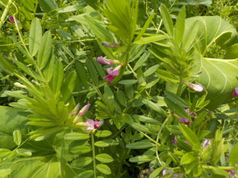
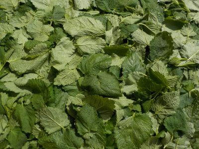
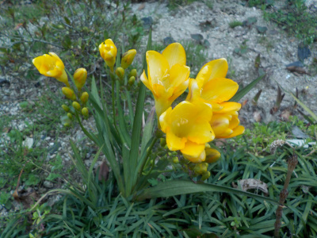

遊びで植物を育てよう
2019/04/29
たぶんダッチアイリスですね。
アヤメとかアイリスとか似てますよね。

これ何だっけって調べたらダッチアイリスがひっかかりました。
白い網目があるとか、花の元が黄色いとか白いとかで区別するって書いてあるところが多かったです。
【4月TOP】
【日記TOP】
【園芸TOP】
2019/04/21
グミは虫がいっぱい寄って来ていいな。
グミの周りは虫の羽音がずーっとしています。

この虫たちが果樹に行ってくれると嬉しいんだけどな。
【4月TOP】
【日記TOP】
【園芸TOP】
2019/04/21
今年はマメ科の雑草が多く生えています。
カラスノエンドウをよく見ます。

マメ科の植物は肥料になるとか言うのであってもいいかな。
でも花が咲いたら刈り取らないと栄養を種に取られるようです。
時間がある時に草刈りをしようと思います。
【4月TOP】
【日記TOP】
【園芸TOP】
2019/04/21
ボタンの蕾が大きくなっています。
あともうちょっとで咲きそうです。

楽しみです。
咲いたときに天気がいいといいな。
【4月TOP】
【日記TOP】
【園芸TOP】
2019/04/21
レモンバームを収穫しました。
収穫して洗って乾燥中です。

今年のレモンバームはなんか葉っぱが大きくて柔らかい気がする。
何かと交配してるかも。
香は普通にレモンバームなのでこのまま今年も育てるけど、秋になったら撤去しよう。
【4月TOP】
【日記TOP】
【園芸TOP】
2019/04/07
今年は暖冬だったのでフリージアが綺麗です。
地植えのフリージアが奇麗に咲いてます。

いつもよりも大きく、花が多いような。
ネットで検索したら耐寒性が弱いってありました。
地植えは向かない様ですね。いくつかはプランターに植え替えようと思います。
【4月TOP】
【日記TOP】
【園芸TOP】
過去の日記
【2024年4月の日記】
【2023年4月の日記】
【2022年4月の日記】
【2021年4月の日記】
【2020年4月の日記】
【2019年4月の日記】
【2018年4月の日記】
【2017年4月の日記】
【2016年4月の日記】
【2015年4月の日記】
【2014年4月の日記】
【2013年4月の日記】
【4月TOP】
【日記TOP】
【園芸TOP】
畑仕事じゃないよ。
【おいしいものを食べよう。】【たくさん寝よう。】
【ソロ活をしよう!】【季節感のあることをしよう。】【動画視聴はほどほどに。】【当サイトの全てのコンテンツは無断転載禁止です。】